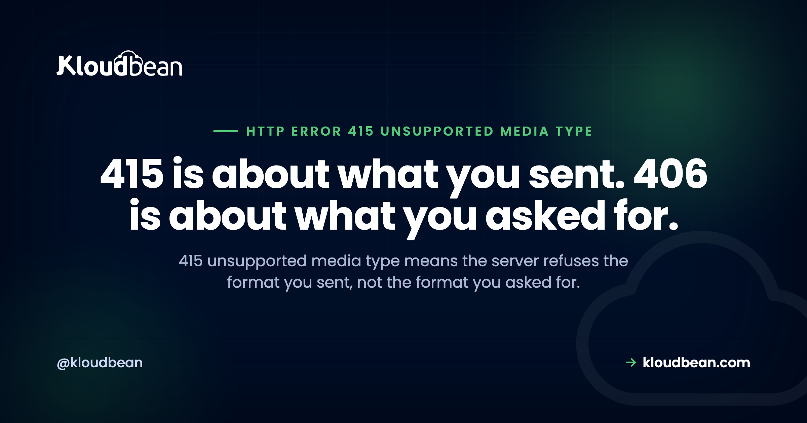

HTTP Error 415 Unsupported Media Type: The Header You Sent

A 415 unsupported media type response is the server telling you it won't accept the format of what you just sent it. Not the URL, not your credentials, not whether the data is valid. The format. That makes it one of the more precise status codes you can get, and yet it's routinely confused with 400, 406 and 422, which fail for entirely different reasons. Sorting out which one you actually have takes about ten seconds once you know what to look at.
The server refuses to process your request because the request body is in a format it doesn't support for that method on that resource. In practice it's nearly always the Content-Type header on a POST, PUT or PATCH: missing, wrong, or carrying a parameter the server rejects. Set the correct type explicitly and retry. Per RFC 9110 the refusal can also come from an unsupported Content-Encoding, or from the server inspecting the data itself, so a correct header does not fully rule out a 415.
The four-way split: 400, 406, 415 and 422
Start here, because picking the wrong code to debug wastes the most time. All four are 4xx, all four can come back from the same endpoint, and each one blames something different.
| Code | What failed | Which header decides it |
|---|---|---|
| 400 Bad Request | The request was malformed. Broken syntax, bad framing. | None. The message itself is wrong. |
| 415 Unsupported Media Type | The format you sent is not supported here. | Content-Type or Content-Encoding on your request |
| 406 Not Acceptable | The server can't produce a format you'll accept. | Accept on your request |
| 422 Unprocessable | Format understood, syntax fine, the data was still wrong. | None. It's your values, not your headers. |
The direction is the whole distinction. Content-Type describes what you're sending. Accept describes what you want back. A 415 blames the first, a 406 blames the second. Say that out loud once and you'll never mix them up again.
You don't have to take my word for the 415 and 422 boundary either, because RFC 9110 draws it explicitly: 422 means the server understood the content type, which is precisely why a 415 would have been the wrong answer. The spec anticipated this argument and settled it.
If you are receiving 415s
Work through these in order. The first one accounts for a large share of 415s people hit while testing, and it catches everyone at least once.
You didn't set Content-Type, so something else chose for you. curl with -d defaults to application/x-www-form-urlencoded. Send JSON that way to an endpoint expecting JSON and you get a 415, even though your body is perfectly valid JSON. The server never looked at the body. It read the header, saw form encoding, and stopped.
# 415: the body is JSON, the header says form-encoded
curl -X POST https://api.example.com/items -d '{"name":"kb"}'
# Correct: declare what you are actually sending
curl -X POST https://api.example.com/items \
-H 'Content-Type: application/json' \
-d '{"name":"kb"}'See the header as the server received it, not as you believe you sent it. One flag settles arguments, because it prints the request headers alongside the response:
curl -sS -o /dev/null -D - -X POST https://api.example.com/items \
-H 'Content-Type: application/json' -d '{"name":"kb"}' -v 2>&1 | grep -i 'content-type\|HTTP/'The endpoint wants a more specific type than you think. PATCH is the usual offender. Plenty of APIs reject plain application/json on a PATCH and require a structured suffix type such as application/merge-patch+json or application/json-patch+json. These are different media types, not stylistic variants, and a server configured for one will refuse the other. Check the endpoint's documentation for the exact string.
You compressed the body. Sending Content-Encoding: gzip on a request assumes the server decompresses request bodies, and many don't. RFC 9110 lists an unsupported content coding as a 415 cause in its own right, separate from the media type. Drop the encoding and retry before you go looking at anything else.
The multipart boundary is missing. For file uploads, multipart/form-data requires a boundary parameter. Set the type by hand without it and the server can't parse the body at all. The fix is usually to stop setting the header manually and let your HTTP client generate it, since the boundary has to match the body it wrote.
The exact-match traps
These are the ones that produce the "but I set the right Content-Type" bug reports, and they're worth knowing before you spend an hour on one.
The charset parameter. Some servers match the media type strictly and reject application/json; charset=utf-8 while accepting bare application/json. This is the server being stricter than it should be, since a parameter is part of a legitimate media type, but knowing the pattern is more useful than being right about it. Try the type without parameters as a diagnostic. If that fixes it, you've found a server-side matching rule, not a problem with your client.
Framework-level allowlists. Most 415s are generated by your framework before your handler ever runs, which is why there's nothing in your application logs. Spring has consumes on the mapping. ASP.NET Core has the Consumes attribute. Django REST Framework decides via its configured parser classes. Express only parses bodies for the types its middleware is registered for. In every case the endpoint declares a whitelist, and anything outside it is refused at the door. Look at that declaration rather than your handler.
Something rewrote your header in transit. A reverse proxy, an API gateway, or a security filter can strip or replace Content-Type before the application sees it. If the header looks right leaving your client and wrong arriving at your app, stop debugging the app.
It might not be your header at all
Here's the part that catches careful people. RFC 9110 permits the format problem to be identified by inspecting the data directly, not only by reading the declared type. So a server is within spec to accept your Content-Type: image/png, look at the actual bytes, notice they aren't a PNG, and return 415.
Upload endpoints do this deliberately, and they should, because trusting a client-declared type on a file upload is a well-known way to get something executable onto a server. If you're getting a 415 on an upload with a header you're certain about, check what the file actually is:
file --mime-type upload.png
# image/png means the bytes match. Anything else explains the 415.Renamed files are the common cause. Someone changes .webp to .png to get past a client-side filter, and the server's content check catches it a layer later.
If you are building the API
Tell the client what would have worked. This is the single most useful thing in this article for an API author, and it's in the spec: on a 415, RFC 9110 says to use Accept as a response header to advertise the media types you would have taken, or Accept-Encoding if the problem was the content coding. Almost no API does this, probably because everyone thinks of Accept as a request header and it looks wrong in a response.
HTTP/1.1 415 Unsupported Media Type
Accept: application/json, application/merge-patch+json
Content-Type: application/problem+json
{"type":"about:blank","title":"Unsupported Media Type",
"status":415,"detail":"Send application/json for this endpoint."}That response turns a support ticket into a self-service fix. The client is told the answer in the same round trip that rejected it.
Return the right code for the right failure. Reach for 415 only when you're refusing the format. If you parsed the body and the values were wrong, that's 422. If the body was syntactically broken, that's 400. If the method isn't allowed here at all, that's 405, with an Allow header. Being sloppy here pushes debugging work onto every consumer of your API, forever.
Be as permissive as you safely can. Accepting application/json with or without a charset parameter costs nothing and removes a whole class of integration friction. Strict matching on parameters is a decision worth making deliberately rather than inheriting from a default.
Say which type you wanted in the body too. An empty 415 with no explanation is a poor experience. A short message naming the expected type saves the reader a trip to your docs, assuming your docs even cover it.
What running this somewhere real involves
Straight answer: it mostly doesn't. A 415 is a decision your application or framework made about a header, and no hosting configuration fixes that. Anyone selling you infrastructure as the solution to a status code your own code returned is not being straight with you.
What the infrastructure layer genuinely touches is narrower and worth naming. A reverse proxy sits between the client and your app and can alter or drop headers, so knowing exactly what arrived matters. That's a logging question, and it's the one place a managed platform saves you real time: on Kloudbean the reverse proxy is managed and both server and application logs are reachable from the same dashboard as the app, so comparing the header you sent against the header that arrived is a look rather than an SSH session and a hunt through paths. Worth ruling out one neighbour while you're there: a body that exceeds a size limit returns 413, not 415, so if the failure only happens on large payloads you're chasing the wrong code.
The boundary, as always: managed covers the server, the stack, TLS, backups, and patching. Your routes, your parsers, and your content negotiation stay yours.
More on HTTP Error 415 Unsupported Media Type
The nearest neighbours are worth reading together, because the distinction between them is the actual skill: 422 Unprocessable Entity for content that was understood and still rejected, 406 Not Acceptable for the mirror-image failure on the response side, and 400 Bad Request for genuinely malformed requests. When the objection is the size of the body rather than its type, that is 413 Content Too Large. Also in the cluster: 405 Method Not Allowed, 401 Unauthorized, 409 Conflict, and 451 Unavailable For Legal Reasons, the one 4xx that is a disclosure rather than a fault. If the request stalls on the way in rather than being refused, 408 Request Timeout. If a proxy is in the path and you suspect it's touching your headers, nginx as a reverse proxy for Node, and structured logging for seeing what actually arrived.
Fewer mysteries on the next deploy.
Build logs stream live in the console, deployment history keeps what happened, and the logs viewer separates app errors from web requests, so a failed start is a five-minute read rather than a guessing game.
- ✓ Live build logs
- ✓ Deployment history
- ✓ Logs viewer
- ✓ Managed process restarts
- ✓ Automatic backups
- ✓ Git deploy
FAQ
What does 415 unsupported media type mean?
It means the server is refusing your request because the body is in a format it does not support for that method on that resource. It is a judgement about format, not about whether your data is valid or your URL is correct. In practice it is nearly always the Content-Type header on a POST, PUT, or PATCH request.
How do I fix a 415 error?
Set the Content-Type header explicitly to the exact type the endpoint expects, then retry. If you are using curl with the data flag and have not set a type, curl sends form encoding by default, which is the most common cause. If the header is already correct, check for an unsupported Content-Encoding and for a more specific type requirement such as a JSON patch variant.
What is the difference between 415 and 406?
Direction. A 415 is about Content-Type, the format you sent in the request body. A 406 is about Accept, the format you asked the server to respond with. One blames what you sent, the other blames what you wanted back, so they need completely different fixes.
What is the difference between 415 and 422?
RFC 9110 settles this directly: a 422 means the server understood the content type and found the syntax correct, which is exactly why 415 would have been inappropriate. So 415 means the format was rejected, and 422 means the format was fine and the values inside were not.
Why do I get a 415 when my Content-Type looks correct?
Three common reasons. The server may match the media type strictly and reject a charset parameter it does not expect. A reverse proxy or gateway may have rewritten the header before your application saw it. Or the server is inspecting the actual bytes, which the spec permits, and they do not match the type you declared. That last one is common on file uploads.
Can a 415 come from the file itself rather than the header?
Yes. RFC 9110 allows the format problem to be identified by inspecting the data directly, so a server can accept your declared type, examine the bytes, find a mismatch, and refuse. Upload endpoints do this deliberately because trusting a client-declared type on a file upload is unsafe. Check the real type with a MIME detection tool before assuming the header is at fault.
What should a 415 response include?
Per RFC 9110, the types you would have accepted, sent as an Accept response header, or Accept-Encoding if the problem was the content coding. Using Accept in a response surprises people because it is usually a request header, which is likely why so few APIs do it. Adding it turns a rejection into a self-service fix.
Is 415 a client error or a server error?
A client error, in the 4xx class, meaning the server believes the request was at fault. That said, it can still be the server being unnecessarily strict, for example by rejecting a valid charset parameter. If you control both sides, widening what the endpoint accepts is often the better fix than making every caller match an exact string.